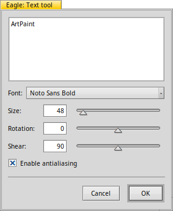

The Text tool - T
|  |
After you chose the text tool, you click into the canvas. That creates a preview of the currently set text in the active layer and opens the text configuration window. The box at the top is where you enter your text. Line breaks are created with CTRL RETURN. After choosing the type of , you set its and optionally and . to avoid jagged edges. You can move the text around the canvas with the mouse. Once you click you cannot edit the text anymore, besides with the usual layer rotation and translation. The quick key to choose the aribrush tool is T. Changing the color of the text is currently not very intuitive: |
Back: The Fill tool Next: The Transparency tool